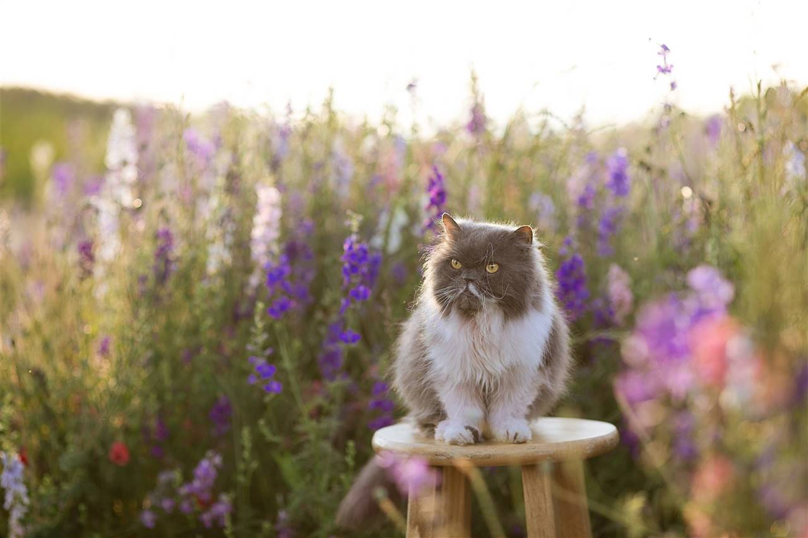

Gatitos Persas

El persa es una raza de gato caracterizada por tener una cara ancha y plana y un gran abundante pelaje de variados colores. Son considerados comúnmente como gatos aristocráticos.
Los primeros gatos persas fueron introducidos en Italia desde Persia en la década de 1620 y a sus descendientes se les llamó de muchas maneras.
La rama persa actual se desarrolló a finales de 1800 en Inglaterra y proviene del gato de Angora turco.